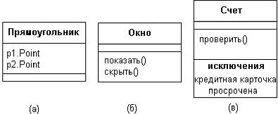
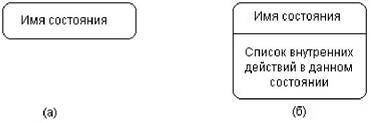

Практична робота з теми обєктно-орієнтована модель програмної системи. Розробка діаграми класів
Отримати навички побудови статичного представлення логічної моделі проектованої інформаційної системи у вигляді діаграми класів UML, а також динамічного представлення логічної моделі у вигляді діаграм станів UML.
Порядок виконання роботи
Центральне місце в ООАП займає розробка логічної моделі системи у вигляді діаграми класів. Нотація класів в мові UML проста і інтуїтивно зрозуміла усім, хто коли-небудь мав досвід роботи з CASE- інструментаріями.
Діаграма класів (class diagram) служить для представлення статичної структури моделі системи в термінології класів об'єктно-орієнтованого програмування. Діаграма класів може відбивати, зокрема, різні взаємозв'язки між окремими сутностями предметної області, такими як об'єкти і підсистеми, а також описує їх внутрішню структуру і типи стосунків. На цій діаграмі не вказується інформація про тимчасові аспекти функціонування системи. З цієї точки зору діаграма класів є подальшим розвитком концептуальної моделі проектованої системи.

Рис. 15 - Графічне зображення класу на діаграмі класів
Клас (class) в мові UML служить для позначення безлічі об'єктів, які мають однакову структуру, поведінку і стосунки з об'єктами з інших класів. Графічно клас зображається у вигляді прямокутника, який додатково може бути розділений горизонтальними лініями на розділи або секції (рис. 15).
Обов'язковим елементом позначення класу є його ім'я. На початкових етапах розробки діаграми окремі класи можуть вказуватися ім'я класу, атрибути(змінні) і операції(методи).
позначатися простим прямокутником з вказівкою тільки імені відповідного класу. У міру опрацювання окремих компонентів діаграми опису класів доповнюються атрибутами і операціями.
Навіть якщо секція атрибутів або операцій є порожньою, в позначенні класу вона виділяється горизонтальною лінією, щоб відразу відрізнити клас від інших елементів мови UML. Для класу "Рахунок"(мал. 8, в) додатково зображена четверта секція, в якій вказано виключення, - відмова від обробки простроченої кредитної картки.
Ім'я класу має бути унікальним в межах пакету, який описується деякою сукупністю діаграм класів(можливо, однією діаграмою). На додаток до загального правила найменування елементів мови UML, ім'я класу записується по центру секції імені напівжирним шрифтом і повинно розпочинатися із заголовної букви. Рекомендується в якості імен класів використати іменники, записані з практичних міркувань без пропусків. Необхідно пам'ятати, що саме імена класів утворюють словник предметної області при ООАП.
Прикладами імен класів можуть бути такі іменники, як "Співробітник", "Компанія", "Керівник", "Клієнт", "Продавець", "Менеджер", "Офіс" і багато інших, що мають безпосереднє відношення до модельованої предметної області і функціонального призначення проектованої системи.
У другій згори секції прямокутника класу записуються його атрибути (attributes) або властивості. У мові UML прийнята певна стандартизація запису атрибутів класу, яка підкоряється деяким синтаксичним правилам. Кожному атрибуту класу відповідає окремий рядок тексту, який складається з квантора видимості атрибуту, імені атрибуту, його кратності, типу значень атрибуту і, можливо, його початкового значення : <квантор видимості> <ім'я атрибуту> [кратність] : <тип атрибуту> = <початкове значення> {рядок-властивість}
Квантор видимості може приймати одне з трьох можливих значень і, відповідно, відображається за допомогою спеціальних символів:
- символ "+" означає атрибут із зоною видимості типу загальнодоступний(public);
- символ "#" означає атрибут із зоною видимості типу захищений(protected);
- і, нарешті, знак "-" означає атрибут із зоною видимості типу закритий(private).
Квантор видимості може бути опущений. Ім'я атрибуту є рядком тексту, який використовується як ідентифікатор відповідного атрибуту і тому має бути унікальною в межах цього класу. Ім'я атрибуту є єдиним обов'язковим елементом синтаксичного позначення атрибуту. Тип атрибуту в нотації
UML іноді визначається залежно від мови програмування, яку передбачається використати для реалізації цієї моделі. У простому випадку тип атрибуту вказується рядком тексту, що має осмислене значення в межах пакету або моделі, до яких відноситься даний клас. Початкове значення служить для завдання деякого початкового значення для відповідного атрибуту у момент створення окремого екземпляра класу.
Операція (operation) є деяким сервісом, який надає кожен екземпляр класу на певну вимогу. Сукупність операцій характеризує функціональний аспект поведінки класу. Запис операцій класу в мові UML також стандартизована і підкоряється певним синтаксичним правилам. При цьому кожній операції класу відповідає окремий рядок, який складається з квантора видимості операції, імені операції, вираження типу повертаного операцією значення і, можливо, рядок-властивість цієї операції :
<квантор видимості> <ім'я операції> (список параметрів) : <вираження типу повертаного значення> { рядок-властивість}
Квантор видимості, як і у разі атрибутів класу, може приймати одне з трьох можливих значень і, відповідно, відображається за допомогою спеціального символу. Квантор видимості для операції може бути опущений. Ім'я операції є рядком тексту, який використовується як ідентифікатор відповідної операції і тому має бути унікальною в межах цього класу. Ім'я операції є єдиним обов'язковим елементом синтаксичного позначення операції. Список параметрів є переліком розділених комою формальних параметрів. Вираження типу повертаного значення також є залежною від мови реалізації специфікацією типу або типів значень параметрів, які повертаються об'єктом після виконання відповідної операції. Двокрапка і вираження типу повертаного значення можуть бути опущені, якщо операція не повертає ніякого значення.
Імена операцій, так само як і атрибутів, записуються з рядкової(малою) букви, а їх типи - із заголовної(великий) букви. При цьому обов'язковою частиною рядка запису операції є наявність імені операції і круглих дужок.
В якості прикладів запису операцій можна привести наступні позначення окремих операцій :
- +створити()
- +намалювати(форма: Багатокутник = прямокутник, колір_заливки : Color = (0, 0, 255))
- запросити_рахунок_клієнта(номер_рахунку : Integer) : Currency
- видати_повідомлення() : {"Помилка ділення на нуль"}
Окрім внутрішнього устрою або структури класів на відповідній діаграмі вказуються різні стосунки між класами. При цьому сукупність типів таких стосунків фіксована в мові UML і зумовлена семантикою цих типів стосунків. Базовими стосунками або зв'язками в мові UML є:
- відношення залежності (dependency relationship);
- відношення асоціації (association relationship);
- відношення узагальнення (generalization relationship);
- відношення реалізації (realization relationship).
Кожен з цих стосунків має власне графічне представлення на діаграмі, яке відбиває взаємозв'язки між об'єктами відповідних класів
Проте для більшості фізичних систем, окрім найпростіших і тривіальніших, статичних представлень абсолютно недостатньо для моделювання процесів функціонування подібних систем, як в цілому, так і їх окремих підсистем і елементів.
Діаграма станів описує процес зміни станів тільки одного класу, а точніше - одного екземпляра певного класу, т. е. моделює усі можливі зміни в стані конкретного об'єкту. При цьому зміна стану об'єкту може бути викликана зовнішніми діями з боку інших об'єктів або ззовні. Саме для опису реакції об'єкту на подібні зовнішні дії і використовуються діаграми станів.
Головне призначення цієї діаграми - описати можливі послідовності станів і переходів, які в сукупності характеризують поведінку елементу моделі впродовж його життєвого циклу. Діаграма станів представляє динамічну поведінку сутностей, на основі специфікації їх реакції на сприйняття деяких конкретних подій. Діаграма станів по суті є графом спеціального виду, який представляє деякий автомат.
Формалізм звичайного автомата заснований на виконанні наступних обов'язкових умов.
- автомат не запам'ятовує історію переміщення із стану в стан;
- у кожен момент часу автомат може знаходитися в одному і тільки в одному зі своїх станів;
- хоча процес зміни станів автомата відбувається в часі, явно концепція часу не входить у формалізм автомата;
- кількість станів автомата має бути обов'язкова кінцевим(у мові uml розглядаються тільки кінцеві автомати), і усі вони мають бути специфіковані явним чином;
- граф автомата не повинен містити ізольованих станів і переходів;
- автомат не повинен містити конфліктуючих переходів.
Таким чином, правила поведінки об'єкту, що моделюється деяким автоматом, визначаються, з одного боку, загальним формалізмом автомата, а з іншої - його графічним зображенням в мові UML у формі конкретної діаграми станів.

Рис.16 - Графічнезображення станівнадіаграмі станів
Поняття стану(state) є фундаментальним не лише в метамоделі мови UML, але і в прикладному системному аналізі. Уся концепція динамічної системи грунтується на понятті стану системи. Стан може бути заданий у вигляді набору конкретних значень атрибутів класу або об'єкту, при цьому зміна їх окремих значень відбиватиме зміну стану модельованого класу або об'єкту.
Ім'я стану є рядком тексту, який розкриває змістовний сенс цього стану. Ім'я завжди записується із заголовної букви. Оскільки стан системи є складовою частиною процесу її функціонування, рекомендується в якості імені використати дієслова в теперішньому часі(дзвенить, друкує, чекає) або відповідне причастя(зайнятий, вільний, передано, отримано).
Простий перехід (simple transition) є відношенням між двома послідовними станами, яке вказує на факт зміни одного стану іншим. Перебування модельованого об'єкту в першому стані може супроводжуватися виконанням деяких дій, а перехід в другий стан буде можливий після завершення цих дій, а також після задоволення деяких додаткових умов. В цьому випадку говорять, що перехід спрацьовує, або відбувається спрацьовування переходу.
Спрацьовування переходу може залежати не лише від настання деякої події, але і від виконання певної умови, що називається сторожовою умовою. Об'єкт перейде з одного стану в інший у тому випадку, якщо сталася вказана подія і сторожова умова набуло значення "істина".
Термін подія (event) вимагає окремого пояснення, оскільки є самостійним елементом мови UML. Формально, подія є специфікацією деякого факту, що має місце в просторі і в часі. Після настання деякої події не можна вже повернутися до попередніх подій, якщо така можливість не передбачена явно в моделі.
Сторожова умова (guard condition), якщо воно є, завжди записується в прямих дужках після події і є деяким булевим вираженням. З контексту діаграми станів повинна явно виходити семантика цього виразу, а для запису вираження може використовуватися синтаксис мови об'єктних обмежень, основи якої викладені в додатку.
Складений стан (composite state) - такий складний стан, який складається з інших вкладених в нього станів. Останні виступатимуть по відношенню до першого як підстани (substate).
Введення для переходу сторожової умови дозволяє явно специфікувати семантику його спрацьовування. Якщо сторожова умова набуває значення "істина", то відповідний перехід може спрацювати, внаслідок чого об'єкт перейде в цільовий стан
Складений стан(composite state) - такий складний стан, який складається з інших вкладених в нього станів. Останні виступатимуть по відношенню до першого як підстани(substate). Хоча між ними має місце відношення композиції, графічно усі вершини діаграми, які відповідають вкладеним станам, зображаються усередині символу складеного стану. В цьому випадку розміри графічного символу складеного стану збільшуються, так щоб вмістити в себе усі підстани.
Історичний стан(history state) застосовується в контексті складеного стану. Воно використовується для запам'ятовування того з послідовних підстанів, яке було поточним у момент виходу із складеного стану.
Порядок виконання роботи
Завдання для виконання роботи беруться з пункту 2.4 Завдання для груп студентів. У проектах 1 - 13 кожній групі студентів необхідно на підставі концептуальної моделі, побудованої в лабораторних роботах №1-5, виявити основні елементи (класи) програмної системи, їх структуру і стосунки. Побудувати діаграму класів для проектованої системи. Уточнити модель за рахунок уточнення атрибутів і методів класів згідно до інформації, що наведена у пункті 4.2 Теоретичні відомості